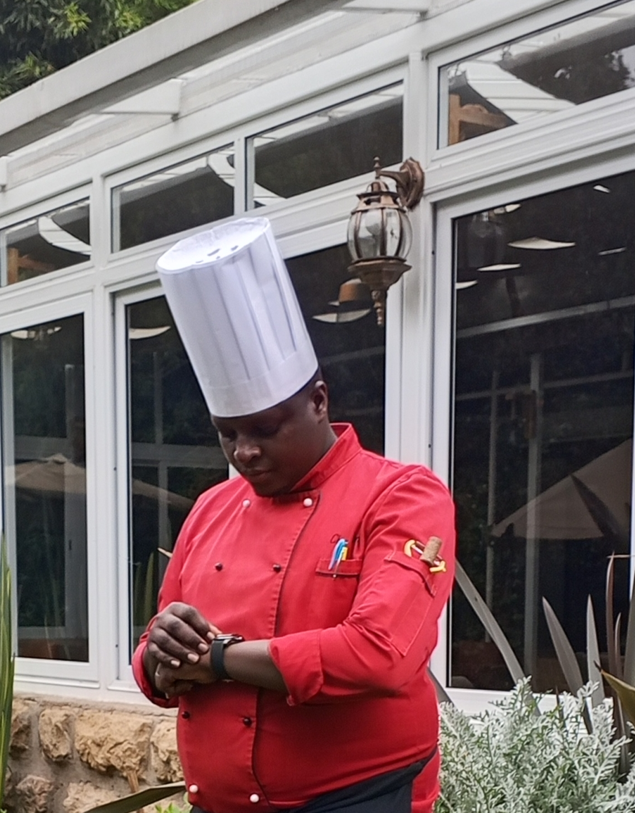

DIPLOMA
Hospitality Management
Mount Kenya University
BEE-KAY URBAN FEAST & CATERERS
Meet Chef Ben — a professional chef and pastry specialist bringing 13 years of culinary experience, refined presentation and memorable dining experiences to every occasion.
CULINARY EXCELLENCE
Great food is more than a meal. It is an experience created through knowledge, technique, timing, presentation and attention to detail. Chef Ben brings these elements together to create food that is carefully prepared, beautifully presented and designed to leave a lasting impression.

THE CHEF
Benson Kamau Wangui, professionally known as Chef Ben, is a dedicated professional chef with 13 years of culinary and hospitality experience.
His professional journey has taken him through demanding hospitality environments where consistency, discipline, presentation and guest satisfaction are essential. This experience has helped shape a chef who understands that exceptional food begins long before a plate reaches the table.
Chef Ben specialises in professional cooking, pastry, catering and fine dining, with experience across African, Continental and Indian cuisine. His approach combines classical culinary discipline with creativity, presentation and a strong understanding of what makes food memorable.
From carefully produced pastries and desserts to professionally executed savoury dishes and catered events, Chef Ben approaches every assignment with the same objective: deliver food that looks exceptional, tastes exceptional and is handled with professional care.
PROFESSIONAL JOURNEY
A career shaped by professional kitchens, hospitality standards and hands-on culinary experience.
Professional hospitality experience within a high-standard lodge environment, strengthening culinary discipline, kitchen organisation and guest-focused service.
Experience within one of Kenya's recognised safari hospitality environments, working within professional food production and service standards.
Further professional exposure across hotel food production, culinary preparation and hospitality service.
EDUCATION & DEVELOPMENT
DIPLOMA
Mount Kenya University
CERTIFICATE
Utalii College
SPECIALISATION
Practical culinary experience developed through professional hospitality kitchens.
WHAT CHEF BEN OFFERS
Professional culinary services designed for individuals, families, celebrations, businesses and special events.
Carefully prepared food and professional culinary support for celebrations, gatherings and special occasions.
Refined dishes, thoughtful presentation and an elevated dining experience for guests who appreciate detail.
Professionally crafted pastries, desserts and sweet creations with attention to flavour, texture and presentation.
Culinary support for private celebrations, corporate functions, parties and other organised events.
Custom culinary experiences built around the occasion, guests, menu requirements and desired presentation.
Culinary creativity and professional experience applied to menu planning and food presentation.
CULINARY SPECIALITIES
Familiar flavours, traditional inspiration and modern professional presentation.
International techniques and refined dishes suitable for sophisticated dining occasions.
Aromatic dishes, layered flavours and carefully prepared Indian-inspired culinary experiences.
Dessert and pastry work combining precision, creativity, texture and visual presentation.
THE ART OF PASTRY
Pastry is where culinary precision meets creativity.
Chef Ben's pastry work reflects an appreciation for detail, balance and presentation. From preparation and baking to finishing and presentation, pastry requires patience, consistency and attention to the smallest details.
His professional background allows him to approach pastry not simply as baking, but as a complete culinary discipline where flavour, texture, structure and appearance work together.
VISUAL JOURNEY
A selection of culinary moments, dishes, preparation and professional food presentation.
CHEF BEN IN ACTION
Watch Chef Ben at work through the supplied culinary videos.
THE EXPERIENCE
A decade-plus of practical culinary and hospitality experience developed across professional environments.
Experience gained through established hospitality environments including safari and hotel operations.
African, Continental and Indian culinary experience combined with pastry expertise.
Food should be thoughtfully prepared and presented with the same care that goes into its flavour.
Hospitality education and practical experience support an organised, guest-focused culinary approach.
Culinary services can be shaped around the type of event, guests and dining experience required.
CLIENT EXPERIENCES
Experiences shared by clients who have worked with Chef Ben across dining, catering and professional culinary services.
Chef Ben delivered an exceptional pork dining experience. The quality of the food, preparation and overall dining experience was truly outstanding.
Chef Ben is highly professional in his work. His plating is impressive, he keeps a clean and tidy working environment, and he works with excellent time management. His attention to cleanliness and presentation really stands out.
I worked with Chef Ben for the first time and was very impressed by what I saw. His professionalism and quality of work made a strong impression, and I would gladly recommend him to another client.
Chef Ben did a great job. We honestly did not expect him to deliver such an amazing result. We were all impressed, and our clients left talking about the chef and the wonderful work he had done. He did a marvelous job. Congratulations, Chef Ben, and I wish you all the best in your career.
LET'S CREATE SOMETHING MEMORABLE
Discuss your culinary requirements and create an experience designed around your occasion.
START A CONVERSATIONCONTACT CHEF BEN
For catering, pastry, fine dining or culinary enquiries, get in touch directly.
Chef Ben is a professional Private Chef offering personalized culinary experiences for clients in their homes, private events, celebrations and special occasions.
Menus can be tailored around the occasion, number of guests, dietary requirements and individual culinary preferences.
Book Chef BenChef Ben brings his passion for professional cooking and hospitality to private dining, catering and special events.
Chef Ben has been featured on KTN's Pika cooking programme, showcasing his culinary skills and passion for food.
Watch Chef Ben's featured videos below and discover more about his culinary journey.
Watch Chef Ben cook, create and showcase his culinary work.
Watch Chef Ben in action.
A look at Chef Ben's culinary work.
Chef Ben showcasing his cooking.
Discover Chef Ben's culinary journey.
More from Chef Ben.
Tell Chef Ben about your event or Private Chef requirements.